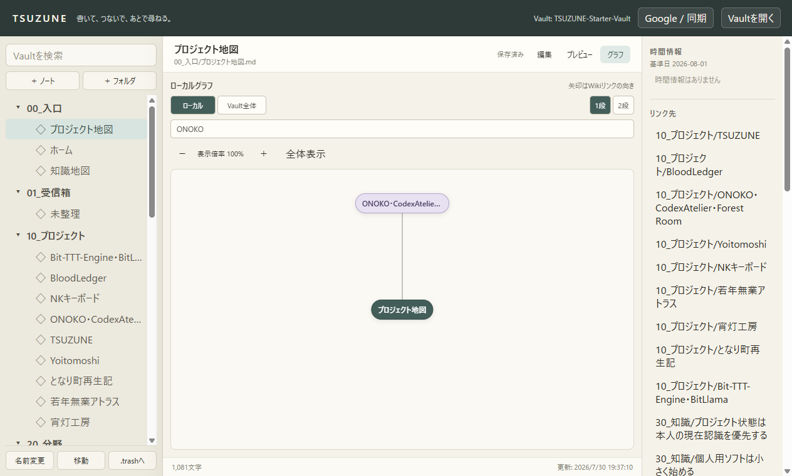
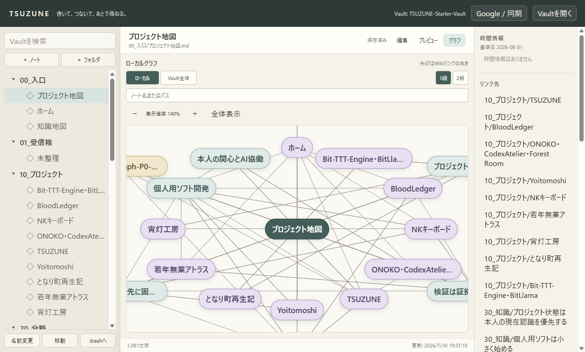
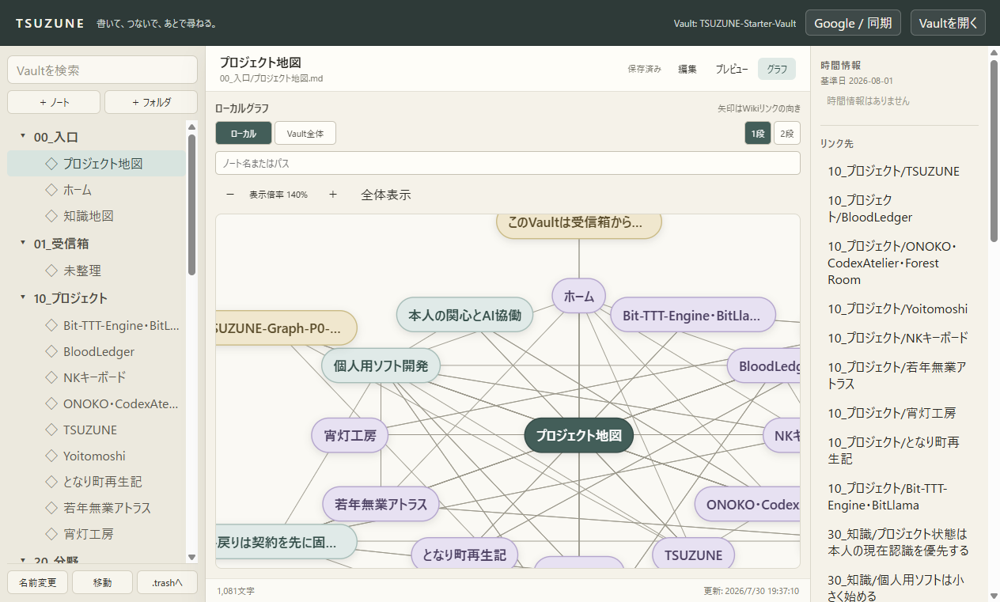
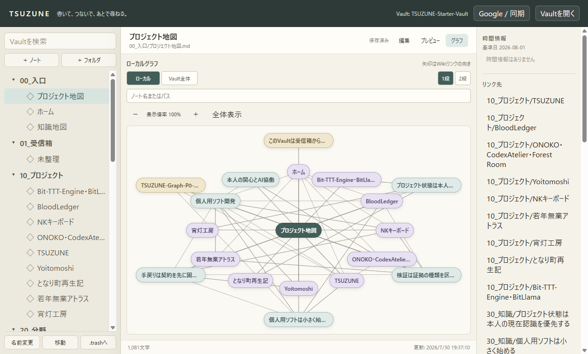

1. ノート名・パスの絞り込み
「ONOKO」で絞り込むと、一致ノートと現在ノートだけを残し、両端が表示される接続だけを描画します。

TSUZUNEのグラフを、探したいノートへ絞り込み、必要な倍率と位置で確認し、いつでも全体表示へ戻せるようにした区切りの機能レポートです。
名前またはパスで表示ノートを絞り込み、60〜180%の範囲で拡大縮小できます。背景ドラッグと矢印キーで表示位置を動かし、「全体表示」で100%・中央位置へ戻せます。操作は表示状態だけに作用し、Markdown本文や選択ノートを書き換えません。
「ONOKO」で絞り込むと、一致ノートと現在ノートだけを残し、両端が表示される接続だけを描画します。

拡大・縮小ボタンで20%ずつ倍率を変更します。表示倍率は60〜180%に制限され、現在値を常に確認できます。

グラフの背景をドラッグすると、ズーム状態を維持したまま見たい位置へ移動できます。キーボードの矢印キーでも移動できます。

「全体表示」を押すと、ズームとパンをまとめて既定値へ戻します。

| 検証 | 結果 |
|---|---|
npm run typecheck | PASS |
npm test | 24 files / 194 tests |
npm run check:mcp | 4 read / 2 write |
npm run build | PASS |
git diff --check | PASS |
webContents.capturePage()で取得した。6DB2BE6B…D9B3）。capture-result.jsonとverification-result.jsonへ保存した。Starter Vaultで実際の探索作業を繰り返し、見切れ、密集、操作疲労、表示上限を確認します。そこで得た実測に基づき、接続強調や安定配置を独立sliceとして追加するか判断します。